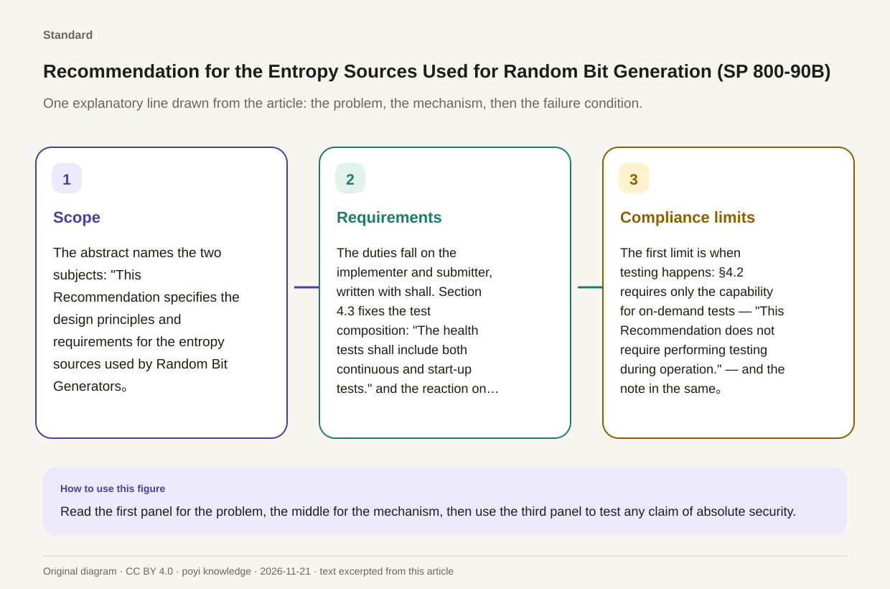
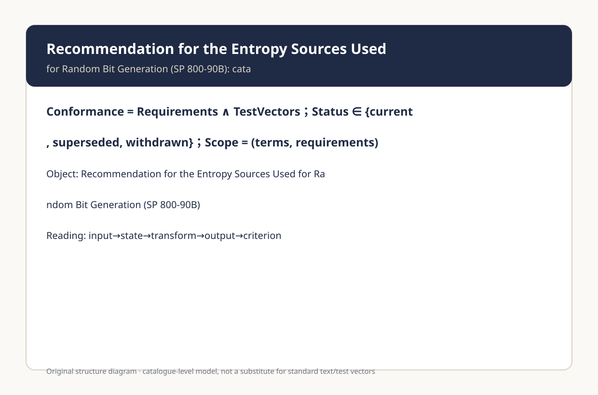

Principles
Standard: Recommendation for the Entropy Sources Used for Random Bit Generation (SP 800-90B) (随机数生成用熵源建议（SP 800-90B）). The abstract names the two subjects: "This Recommendation specifies the design principles and requirements for the entropy sources used by Random Bit Generators, and the tests for the validation of entropy sources." and the division of labour with its siblings: "These entropy sources are intended to be combined with Deterministic Random Bit Generator mechanisms that are specified in SP 800-90A to construct Random Bit Generators, as specified in SP 800-90C." Its object is the entropy source, not the generator algorithm.The two sentences fix the object and the place: design principles, requirements and validation testing for entropy sources are specified here, while the finished generator is left to SP 800-90A and SP 800-90C, so no generator algorithm is defined in this file.

Why it matters
Section 1.1 starts from the practical difficulty: "However, the generation of random bits is problematic in many practical applications of cryptography." and hands over the hardest part: "The development of entropy sources that construct unpredictable outputs is difficult, and providing guidance for their design and validation testing is even more so." The same subsection makes the testing approach conditional on the developer understanding the source, while §2.2.1 raises the noise source to the root of everything: "The noise source is the root of security for the entropy source and for the RBG as a whole."The three form one chain: random bits are hard to produce in practice, the hard part is the entropy source, and the difficulty there is design plus verifiable testing; calling the noise source the root of security puts the foundation of the whole random-bit apparatus on that layer.
Applications
The duties fall on the implementer and submitter, written with shall. Section 4.3 fixes the test composition: "The health tests shall include both continuous and start-up tests." and the reaction on failure: "When the health tests fail, the entropy source shall notify the consuming application", leaving the consuming generator to act on it. Section 4.4 hands the threshold to the developer: "The developer of the entropy source shall determine a reasonable probability of type I error". The measure itself is set out in §2.1: "this Recommendation uses a very conservative measure known as min-entropy, which measures the effectiveness of the strategy of guessing the most likely output of the entropy source."The quotations give the measure and the duty at once: min-entropy is the conservative yardstick, the test composition and the failure notification are shall-level, while the error probability and cutoff values are left to the developer judging the noise source.

Limits & attacks
The first limit is when testing happens: §4.2 requires only the capability for on-demand tests — "This Recommendation does not require performing testing during operation." — and the note in the same subsection says the start-up conditions belong to FIPS 140, since "This document imposes no additional requirements for the use of start-up health testing." The second is testability: the conformance paragraph concedes that some requirements "may be out-of-scope for CAVP or CMVP validation testing". The third is that the document stands alone nowhere: "SP 800-90A addresses the construction of approved DRBG mechanisms, while SP 800-90C addresses the construction of RBGs from the mechanisms in SP 800-90A and the entropy sources in SP 800-90B." The finished random bit generator lives in the other two.
History
The title block opens "NIST Special Publication 800-90B" with the title line "Recommendation for the Entropy Sources Used for Random Bit Generation" and author lines carrying "Kerry A. McKay Mary L. Baish Mike Boyle" (the first author’s name carries a diacritic in the retained title block, so the name sits outside the quotation to keep every quoted span verbatim-checkable); the date line is January 2018, the citation reads "Natl. Inst. Stand. Technol. Spec. Publ. 800-90B, 84 pages (January 2018) CODEN: NSPUE2" and the free-access line is followed by the DOI 10.6028/NIST.SP.800-90B. The acknowledgements name the helpers: "The authors of this Recommendation gratefully acknowledge and appreciate contributions by their colleagues at NIST, Apostol Vassilev and Timothy A. Hall". Section 1.1 records the parallel standard: "This Recommendation was developed in concert with American National Standard (ANS) X9.82, a multi-part standard on random number generation."
Worked example & verification
Formal model and reproduction steps
[S=\min_i S_i,\quad S_i\in{\text{密钥强度},\text{分组安全},\text{实现安全}}]
Recommendation for the Entropy Sources Used for Random Bit Generation (SP 800-90B): the registered public parameters, key material or randomness, and message are mapped through the stated transformation to an output checked against the registered criterion. The worked example is a structural reproduction, not a new test vector; parameter ranges, standard versions and implementation details remain source-bound.
References
- Wikipedia search entry for 随机数生成用熵源建议（SP 800-90B）. https://zh.wikipedia.org/w/index.php?search=%E9%9A%8F%E6%9C%BA%E6%95%B0%E7%94%9F%E6%88%90%E7%94%A8%E7%86%B5%E6%BA%90%E5%BB%BA%E8%AE%AE%EF%BC%88SP%20800-90B%EF%BC%89
- Handbook of Applied Cryptography (Menezes, van Oorschot, Vanstone). https://www.cacr.math.uwaterloo.ca/hac/